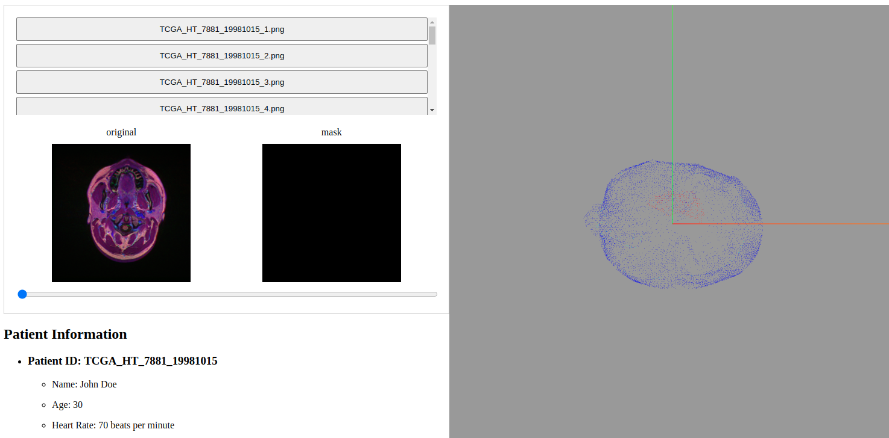
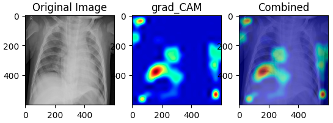

目次
研究
grad-camを用いた、画像認識aiの判断根拠の視覚化と、医用への応用
コンテナ仮想化技術を利用した、同一ローカル内でのデータレプリケーション
制作したシステム等
視聴者数カウントWebシステム. count viewers of live stream system
擬似ブロックチェーン決済システム. fake blockchain payment system
学生用ポータルchrome拡張. chrome extension for student (*no longer support)
grad-camを用いた、画像認識aiの判断根拠の視覚化と、医用画像への応用
作成したQiita記事:
【画像認識根拠可視化】efficientNETに、grad-CAMを適応してみる。
【機械学習】grad-CAMをpythonで実装し、予測の根拠を視覚化する。
作成した医療画像診断支援サイト:
http://hostforconfig.countstream.com
Camのデモンストレーション
http://hostforconfig.countstream.com/cam
サイト画像↓

疾患箇所のヒートマップ出力

個人で作成したGitHub Repository
Webページフロントエンド
https://github.com/medical-ai-project/react-unet
脳腫瘍3dオブジェクト構築
https://github.com/medical-ai-project/unet_brain
疾患箇所ヒートマップ生成API(医用画像を投げるとCAMを出力するAPI)
https://github.com/medical-ai-project/cam_server
2023 written by Eiji